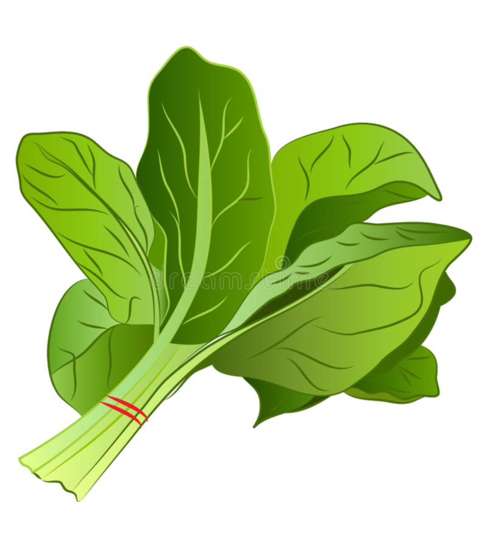
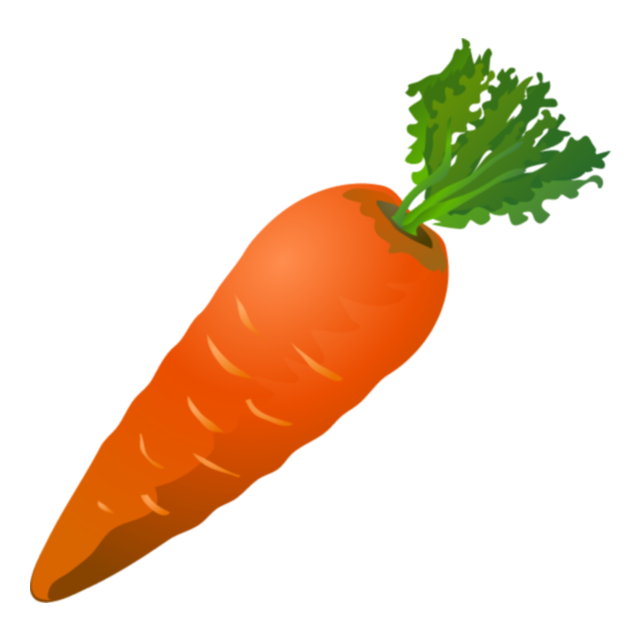
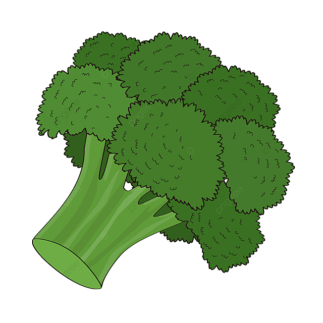
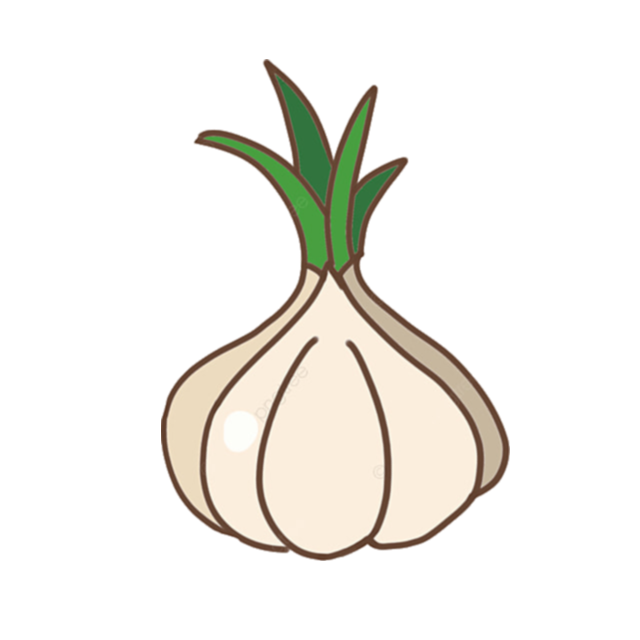
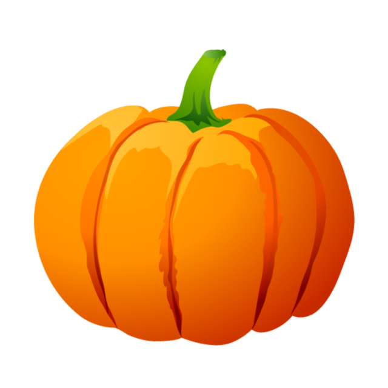
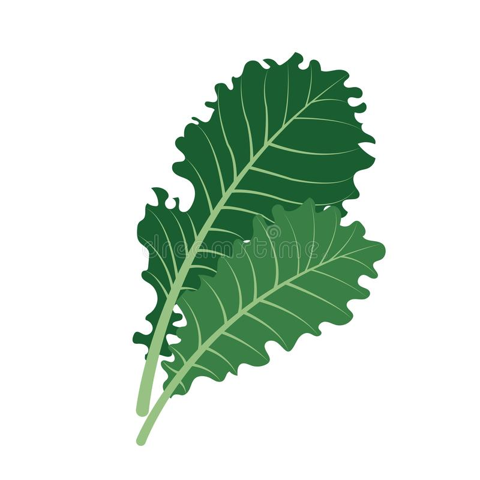
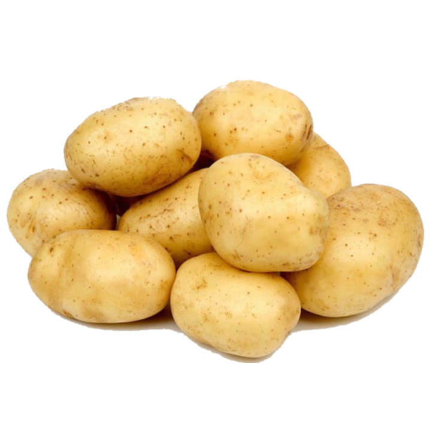
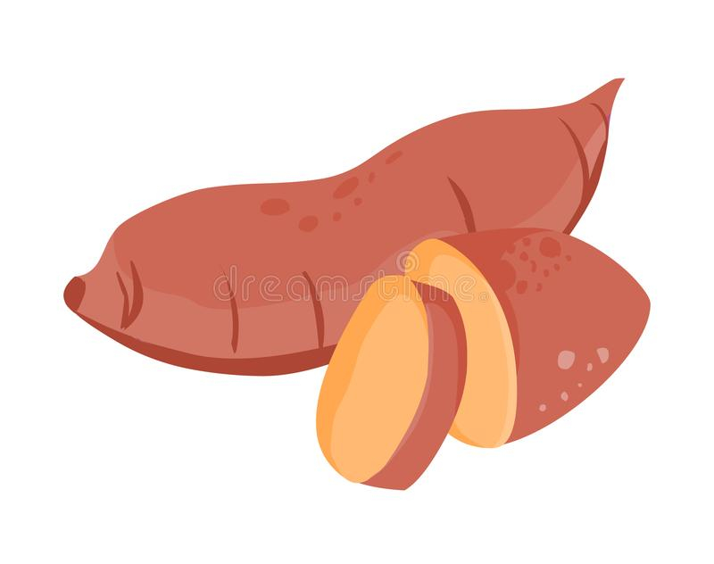
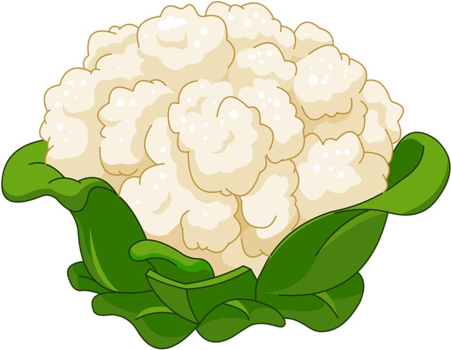
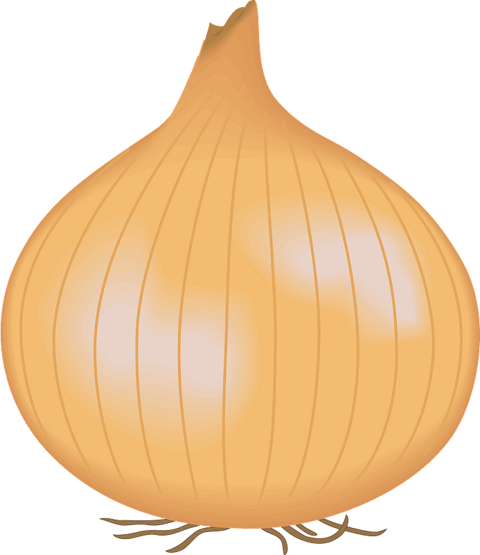

| Activity | Date |
|---|---|
| First day to enrol for re-enrolling (continuing students) | 22 Nov 2021 |
| Orientation |
During Week of 18 July 2022
Visit Orientation page for more details. |
| Lectures Commence (weeks 1-9) | 25 Jul - 23 Sep 2022 |
| Last day to enrol / add subjects yourself | 05 Aug 2022 |
| Last day to enrol / add subjects with Head of Student approval | 12 Aug 2022 |
| Name | Health benefit |
|---|---|
Spinach |
Spinach has a host of benefits. It may reduce oxidative stress, promote eye health, fight cancer, and regulate blood pressure. Healthline: Spinach 101 |
Carrot |
Eating carrots is linked to a reduced risk of cancer and heart disease, as well as improved eye health. Additionally, this vegetable may be a valuable component of an effective weight loss diet. Healthline: Carrots 101 |
Broccoli |
Broccoli's isothiocyanates may improve many risk factors for disease and reduce your risk of cancer. What's more, this vegetable may help lower cholesterol and boost eye health. Healthline: Broccoli 101 |
Garlic |
Current research shows that garlic may have some real health benefits, such as protection against the common cold and the ability to help lower blood pressure and cholesterol levels. Healthline: Health benefits of Garlic |
Pumpkin |
Rich in vitamins, minerals and antioxidants, pumpkin is incredibly healthy. What's more, its low calorie content makes it a weight-loss-friendly food. Healthline: Health benefits of Pumpkin |
Kale |
Kale is a nutritious food rich in antioxidants, vitamin C, vitamin K, and beta-carotene. It also contains nutrients that can support eye health, weight management, heart health, and more. Healthline: Health benefits of Kale |
Potato |
Potatoes contain antioxidants and supply beneficial vitamins and minerals, including vitamin C, B6, and potassium. They may also benefit your digestive health. Healthline: Health benefits of Potatoes |
Sweet potato |
Sweet potatoes are versatile and nutritious, packing a good amount of vitamin A, vitamin C, and manganese into each serving. They also have anti-cancer properties and may promote immune function, gut health, brain function, and eye health. Healthline: Health benefits of Sweet Potatoes |
Cauliflower |
Cauliflower contains unique plant compounds that may reduce the risk of several diseases, including heart disease and cancer. Healthline: Health benefits of Cauliflower |
Onion |
Onions are highly nutritious and have been associated with several benefits, including improved heart health, better blood sugar control, and increased bone density. Healthline: Health benefits of Onions |